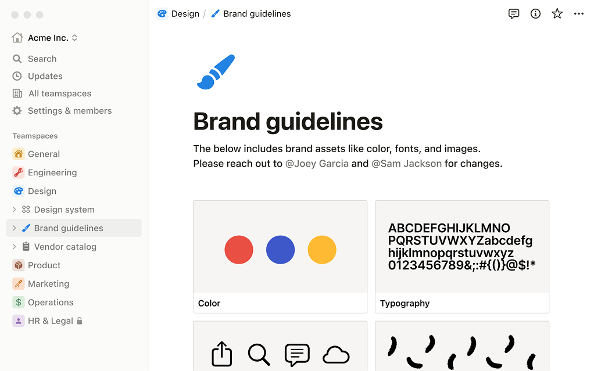
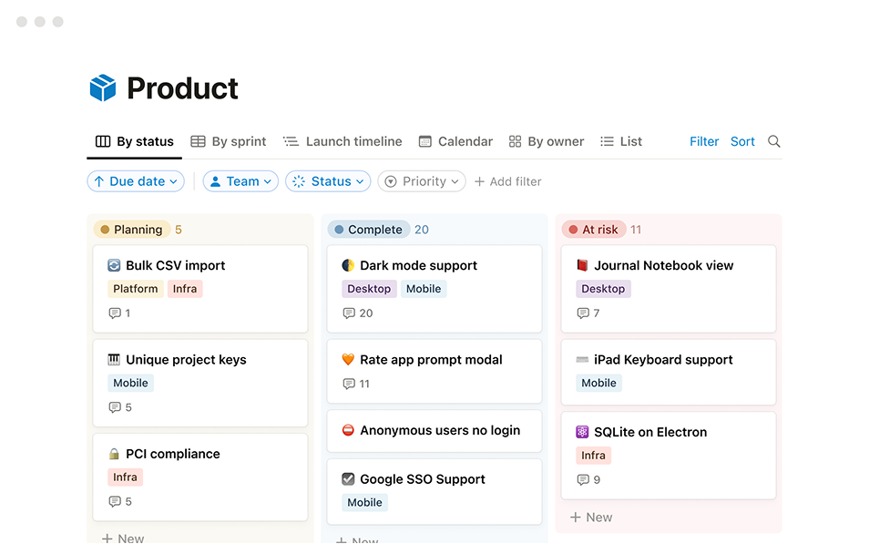

Living Markdown
Notes render live, then transform into tables, checklists and structured work without leaving the page.
The workspace that grows with you
Write, draw, build databases, connect apps — all in one workspace that understands how you think.
What is Prismatica?
Every block can be a note, a database view, a drawing, a dashboard cell or a custom app — all governed by the same reliable data layer.
Notes render live, then transform into tables, checklists and structured work without leaving the page.
Sketch inside your documents with construction lines, freehand marks and real context around the work.
Drag, resize and nest reliable dashboard cells — every cell can become any kind of block.
Tables, kanban, galleries, timelines and graphs are just views over the same connected data.
Calendars, forms, charts, timers and custom calculators plug into the same living workspace.
Share, comment and version everything with teams across countries and business units.
Visual workspace library
The image files in the asset folder are used here with meaningful alternative text, visible captions and high-contrast supporting copy so the visuals never carry information alone.





The grid
Reliable dashboards are not exports anymore. They are native blocks, linked to DBMS data and designed for teams.
Workspace intelligence
Prismatica was built for reliable business management: CRM work, exports from database engines, cloud collaboration and design choices that teams can adapt without rebuilding a stack every quarter.
Guides
Reader, Student and Chatter are line-clear companions that guide the story without stealing attention.
Reads with the visitor and keeps the page grounded in human notes.
Points out what matters in complex data and dashboard decisions.
Turns collaboration into a clear, visual conversation.